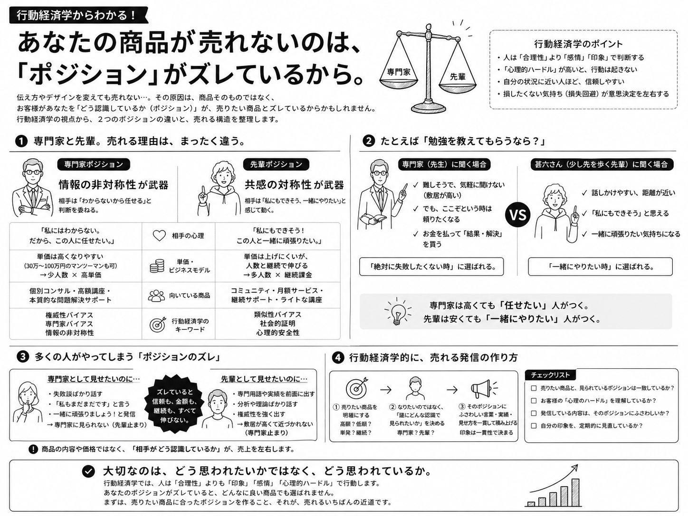

あなたの商品が売れないのは、「ポジション」がズレているから。情報の非対称性 vs 共感の対称性

どーも、とーるです。
家電を買い替えるときのこと、ちょっと思い出してみてください。
たとえば掃除機。まずメーカーの公式サイトを開いて、スペック表を眺めますよね。吸引力が何パスカルで、バッテリーが何分もって……と、数字がずらっと並んでいる。
でも、あれを最後まで読んで「よし、これだ」と即決できる人って、案外少ないと思うんです。
多くの人は、どこかで一回ブラウザをそっと閉じて、こう言う。
「ねえ、掃除機ってどれがいいの？」
しかも聞く相手は、メーカーじゃない。ちょっと家電に詳しい友人だったりします。
これ、よく考えると不思議じゃないですか。
その掃除機について一番詳しいのは、どう考えてもメーカーのはずなんです。作っているんだから。
なのに私たちは、メーカーじゃなくて、友人に聞く。
実はこの「誰に聞くか」問題の中に、今日の話がまるごと詰まっています。
専門家と先輩。
実は「売れる構造」がまったく違います。
SNSを見ていると、
「専門家ポジションを取りましょう。」
という人もいれば、
「親近感が大事です。」
という人もいます。
どちらも間違いではありません。
ですが、多くの人はここを「見せ方の違い」くらいに考えています。
実際はもっと根本的な話です。
この2つは、
人がお金を払う理由そのものが違います。
だから、
高額商品を売りたい人が先輩ポジションを作ってしまったり、
反対に低価格商品やサブスクを売りたい人が専門家ポジションを作ってしまったりすると、
発信と商品が噛み合わなくなります。
専門家は「情報の非対称性」で売れる。
専門家ポジションの武器は、
情報の非対称性です。
簡単にいうと、
「この人は、自分の知らないことを知っている。」
という状態。
相手は、
「私には判断できない。」
「だから、この人に任せたい。」
と思います。
医者を想像してください。
風邪をひいたとき、
もちろんネットで調べることはできます。
薬のことも調べられます。
でも、
「自分で判断するのは怖い。」
そう思うから病院へ行きます。
税理士も同じです。
税法は本を読めば勉強できます。
ですが、
多くの人は税理士へ依頼します。
それは、
判断を買っているからです。
専門家に支払うお金は、
知識だけではありません。
「あなたに任せます。」
という安心感に対して支払っています。
だから、
30万円、50万円、100万円という高額商品でも成立しやすくなります。
先輩は「共感の対称性」で売れる。
一方、先輩ポジションは真逆です。
武器になるのは、
共感の対称性。
つまり、
「この人も、昔は私と同じだった。」
という距離の近さです。
専門家のように、
「すごい人。」
ではありません。
「少し先を歩いている人。」
です。
だから、
「私にもできそう。」
「この人と一緒に頑張りたい。」
という感情が生まれます。
売れる理由は、
知識差ではなく、
心理的な距離の近さです。

勉強を教えてもらうなら、誰を選ぶ？
例えば、
誰かに勉強を教えてもらうとします。
選択肢は大きく2つあります。
一つは、
その分野の専門家。
もう一つは、
自分より少し詳しい近所のお兄さん。
サザエさんでいうと、
甚六さんのような存在です。
甚六さんは、
東大を目指して何度も浪人しているので、
少なくともカツオよりは勉強に詳しい。
だから、
「宿題教えて！」
「受験ってどんな感じ？」
と聞きやすい。
年齢も近い。
距離も近い。
「私にもできそう。」
と思わせてくれる存在です。
これが、
先輩ポジションです。
ですが、
「100万円払うので、人生を変える勉強法を全部教えてください。」
と思う人は少ないでしょう。
相談しやすい。
応援したくなる。
一緒に頑張りたい。
でも、
人生を預けるほどではない。
これが先輩ポジションの特徴です。
専門家には、逆の壁がある。
専門家は反対です。
気軽には近づきにくい。
「こんな初歩的な質問していいのかな。」
「初心者の私なんか相談していいのかな。」
「料金も高そう。」
そんな心理になります。
ですが、
本当に困ったときは違います。
「この人なら解決してくれそう。」
「多少高くてもお願いしたい。」
となります。
だから専門家は、
判断を委ねてもらえる。
その代わり、
最初の一歩のハードルは高くなります。
だから商品との相性がある。
例えば、
本質的なサポートをする30万円のコンサルを売りたい。
それなのに、
毎日の投稿は、
「私もまだまだです。」
「一緒に頑張りましょう！」
「みんなで成長しましょう！」
ばかり。
もちろん好かれます。
でも、
判断を委ねる専門家には見られません。
反対に、
毎日、
実績。
分析。
専門知識。
権威性。
そんな発信ばかりしている人が、
「500円で気軽に学べます！」
というフロント商品を販売しても、
思ったほど気軽には買われません。
なぜなら、
商品ではなく、
売っている人に権威性があるから。
「私にはまだ早そう。」
「簡単って書いてあるけど難しそう。」
「もっと勉強してから買おう。」
そんな心理が働きます。
つまり、
商品の価格だけではなく、
発信で作った印象も購入ハードルを決めています。
「どう思われたいか」より、「どう思われているか」。
ここで一番大事なのは、
自分がどう見せたいかではありません。
相手が、
どう認識しているかです。
自分では専門家のつもりでも、
「近所の詳しい先輩。」
と思われているかもしれない。
逆に、
親近感を出しているつもりでも、
「なんかすごい人。」
と距離を感じさせているかもしれない。
ポジションは、
発信者ではなく、
受け手が決めます。
どちらが正解ではない。
専門家が偉いわけでも、
先輩が優れているわけでもありません。
武器が違うだけです。
専門家は、
情報の非対称性を武器に、
判断を委ねてもらう。
だから、
少人数でも高単価が成立しやすい。
先輩は、
共感の対称性を武器に、
「私にもできそう。」
と思ってもらう。
だから、
コミュニティやサブスク、低価格商品、多人数・継続課金との相性が良い。
大切なのは、
「どちらになりたいか。」
ではありません。
最終的に何を販売したいのか。
30万円のマンツーマンサポートなのか。
月額3,000円のコミュニティなのか。
本質的なコンサルティングなのか。
気軽に学べる講座なのか。
そのゴールによって、
作るべきポジションは変わります。
SNSでは、
「何を発信するか。」
よりも先に、
「どんな印象を積み上げるか。」
ここを設計すること。
商品と発信が噛み合った瞬間、
売れる理由はぐっとシンプルになります。
✦
P.S.
「情報の非対称性 vs 共感の対称性」のように、行動経済学 × SNSビジネスの“本質”は、メルマガ『3-2-1ラボ』でも深掘りしています。気が向いたら、覗いてみてください。
▶ メルマガ・無料講座の詳細・ご登録はこちら（3-2-1ラボ）
とーる｜猫好きの行動経済アナリスト